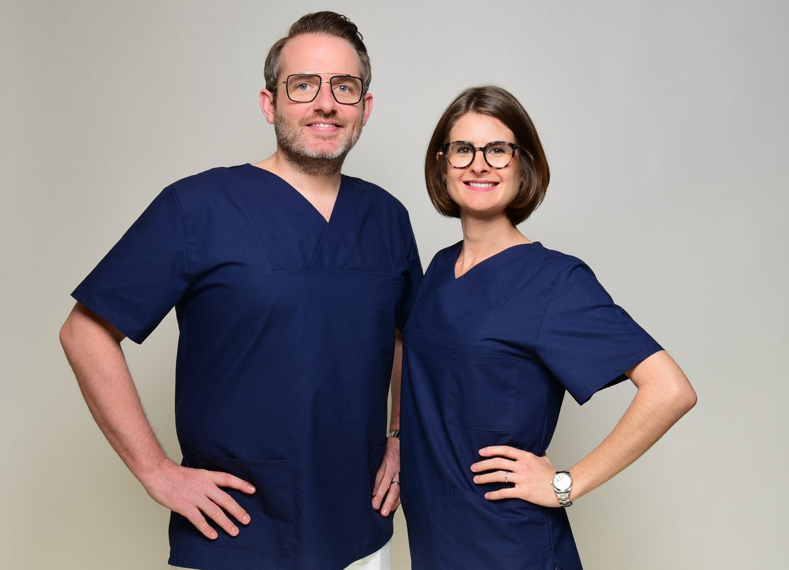

Urologische Gemeinschaftspraxis in Hanau
Urologie in HanauUntersuchen, erklären, gemeinsam entscheiden
Dr. med. Alessa Rech und Daniel Rech, Fachärztin und Facharzt für Urologie, betreuen Sie am Sophie-Scholl-Platz in Hanau – von der Vorsorge über die Diagnostik bis zur ambulanten Operation und onkologischen Nachsorge. Planbare Termine, kurze Wege, ein Ansprechpartner.
63452 Hanau
Wie können wir Ihnen helfen?
Drei Schwerpunkte unserer Praxis
Wählen Sie den Bereich, der zu Ihnen passt – dort finden Sie den Ablauf, die Vorbereitung und die direkte Terminanfrage.
Vorsorge & Männergesundheit
Urologische Krebsfrüherkennung ab 45 – mit PSA-Bestimmung, Ultraschall der Prostata, Nieren und Blase sowie ausführlicher Befundbesprechung.
Zur VorsorgeVasektomie
Sichere und dauerhafte Verhütung für den Mann. Ambulanter Eingriff in örtlicher Betäubung, mit Aufklärungsgespräch und Nachkontrolle.
Zur VasektomieKinderwunsch & Fruchtbarkeit
Abklärung beim Mann mit Spermiogramm, Hormonuntersuchung und Ultraschall – unkompliziert, diskret und ohne lange Wartezeit.
Zum FruchtbarkeitscheckAus der Praxis
Aktuelles
Urlaubs- und Schließzeiten, geänderte Sprechzeiten und Hinweise zu gesetzlichen Neuerungen.
Praxisurlaub zwischen den Jahren
Vom 21. Dezember 2026 bis einschließlich 1. Januar 2027 bleibt unsere Praxis geschlossen. Ab Montag, dem 4. Januar 2027, sind wir wieder zu den gewohnten Sprechzeiten für Sie da.
WeiterlesenSparmaßnahmen in der gesetzlichen Krankenversicherung
Der Gesetzgeber hat Maßnahmen beschlossen, mit denen die Ausgaben der gesetzlichen Krankenversicherung begrenzt werden sollen. Solche Änderungen wirken sich mitunter darauf aus, welche …
WeiterlesenLeistungsspektrum
Urologische Versorgung unter einem Dach
Diagnostik, Therapie und Nachsorge erfolgen in unserer Praxis – ohne Überweisungswege zwischen verschiedenen Einrichtungen.
Onkologie & Nachsorge
Begleitung bei Prostata-, Blasen-, Nieren- und Hodenkrebs: Therapie, Nachsorge und Abstimmung mit den behandelnden Kliniken.
Mehr erfahrenBlut- und Urindiagnostik
Eigenes Praxislabor: PSA und freies PSA, Testosteron, Vitamin D, Urinstatus und Spermiogramm – Ergebnis meist am nächsten Tag.
Mehr erfahrenSonographie
Ultraschall von Nieren, Blase, Prostata, Hoden und Gefäßen – ohne Röntgenstrahlen, mit Befund direkt im Gespräch.
Mehr erfahrenAmbulante Operationen
Blasenspiegelung mit Probenentnahme, Prostatabiopsie, Vasektomie und weitere Eingriffe – ambulant, mit Nachsorge bei uns.
Mehr erfahrenUnsere Praxis
Zwei Fachärzte
ein Behandlungskonzept
Als Gemeinschaftspraxis stimmen wir uns täglich ab. Das bedeutet für Sie: Befunde werden gemeinsam betrachtet, Vertretungen sind geregelt, und Sie müssen Ihre Vorgeschichte nicht bei jedem Termin neu erzählen.
- Ausführliche Aufklärung – Sie sollen verstehen, was untersucht wird und warum
- Diagnostik und Befundbesprechung möglichst am selben Tag
- Planbare Termine statt langer Wartezeiten im Wartezimmer
- Diskrete Atmosphäre für Themen, über die man nicht gern spricht
- Enge Zusammenarbeit mit Kliniken und Fachkolleginnen und -kollegen der Region

| Montag | 07:30 – 13:00 Uhr 14:00 – 16:30 Uhr |
|---|---|
| Dienstag | 07:30 – 13:00 Uhr 14:00 – 16:30 Uhr |
| Mittwoch | 07:30 – 13:00 Uhr |
| Donnerstag | 07:30 – 13:00 Uhr 14:00 – 16:30 Uhr |
| Freitag | 07:30 – 13:00 Uhr |
| Samstag | geschlossen |
| Sonntag | geschlossen |
Termine nach Vereinbarung. Bitte bringen Sie zu jedem Termin Ihre Versichertenkarte bzw. Ihre Versicherungsdaten, Vorbefunde und eine Liste Ihrer Medikamente mit.
Häufige Fragen
Gut zu wissen vor Ihrem ersten Termin
Wie bekomme ich einen Termin?
Am schnellsten telefonisch unter 06181 7033730 während unserer Sprechzeiten. Alternativ können Sie uns über das Kontaktformular oder per E-Mail an kontakt@hanau-urologie.de erreichen; wir melden uns dann zur Terminabstimmung zurück.
Behandeln Sie gesetzlich und privat Versicherte?
Ja. Wir behandeln gesetzlich Versicherte, Privatversicherte, Beihilfeberechtigte und Selbstzahler. Besonderheiten der privatärztlichen Abrechnung – etwa für Beihilfe, Postbeamtenkrankenkasse oder Krankenversorgung der Bundesbahnbeamten – finden Sie auf der Seite Privatpatienten & Beihilfe.
Was sollte ich zum ersten Termin mitbringen?
Versichertenkarte oder Versicherungsunterlagen, ggf. Überweisung, Vorbefunde und Arztbriefe, Ihren Medikamentenplan sowie – falls vorhanden – frühere Laborwerte. Für Urinuntersuchungen ist es hilfreich, wenn Sie nicht unmittelbar vor dem Termin die Toilette aufsuchen.
Muss ich als Mann Angst vor der urologischen Untersuchung haben?
Nein. Die Basisuntersuchung besteht aus Gespräch, Urin- und Blutuntersuchung sowie Ultraschall und ist nicht schmerzhaft. Wir erklären Ihnen jeden Schritt vorher und führen nichts durch, dem Sie nicht zugestimmt haben.
Patientenstimmen
Was unsere Patientinnen und Patienten sagen
Auszüge aus unseren Bewertungen bei Google.
Bin seit letztem Sommer in Behandlung bei Frau Dr. Rech und kann nur Positives über sie und ihr Team berichten. Frau Dr. Rech ist sehr kompetent und einfühlsam. Die Mitarbeiterinnen sind sehr freundlich und ich denke, sie machen ihren Job gut. Ich kann diese Praxis ohne Bedenken weiterempfehlen!
Ich war vor fünf Wochen zur Beratung einer Vasektomie in der Praxis und wurde bestens beraten, alle Fragen wurden beantwortet. Am Freitag war nun der ambulante Eingriff. Ich kann Herrn und Frau Rech nur danken und jedem Mann die Praxis empfehlen. Das Praxisteam ist sehr freundlich und die Terminvergabe zeitnah.
Herr Rech wirkt sehr kompetent, freundlich und erfahren. Die Untersuchung lief nach meiner Vorstellung sehr gut. Ich fühle mich hier gut aufgehoben und ernst genommen. Das Team ist freundlich und gut organisiert.
Ich musste dringend einen Urologen aufsuchen und fuhr spontan zur Praxis Rech. Obwohl ich Neupatient war und die Chance gering stand, spontan einen Termin zu bekommen, versuchte das Team es irgendwie zu ermöglichen – top! Und genauso ging es bei der Untersuchung weiter: Hier merkt man einfach, dass die Tätigkeit sowohl für den Arzt als auch das Team nicht nur ein Beruf, sondern Berufung ist.
Termin vereinbaren
Buchen Sie Ihren Termin direkt online – rund um die Uhr und ohne Wartezeit in der Telefonschleife. Lieber persönlich? Rufen Sie uns während der Sprechzeiten an.